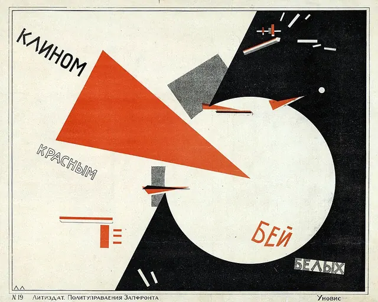

Passos 4 e 5: a ideia aparece, dar forma e pôr à prova
Criar
Uma peça, com palavras e imagens: como levas uma ideia mais longe?

El Lissitzky, Bate os Brancos com a cunha vermelha, 1919 a 1920. Litografia. Biblioteca Estatal Russa, Moscovo. Wikimedia Commons. Domínio público.

Percurso 1 de 5
Construir uma ficção
O que falta a uma ideia para ser história?
0 de 6 peças feitas
- Escrever ficção: o começoUma chave na mesa, alguém a leva: experimenta a ação, a ordem da informação e o ritmo.5 a 8 min
- Escrever ficção: a personagemExperimenta o gesto, o contexto e a voz do narrador numa cena com uma chave.5 a 8 min
- Uma cena com subtextoPrepara uma cena tua, de dois minutos, em que as personagens não dizem tudo.
- A restrição antigaOs clássicos exigiam três unidades: uma só ação, um só lugar, um tempo que coincide com o da representação.60 a 90 min
- Exposição, nó, desenlacePõe à prova um texto teu, ou de um colega: exposição, nó e desenlace.45 a 60 min
- Do conceito ao argumentoAntes de haver guião, há uma cadeia de documentos, cada um mais longo do que o anterior.90 min
Percurso 2 de 5
Construir com palavras e imagens
Em que meio vive melhor uma ideia?
0 de 5 peças feitas
- A dramaturgia do visívelNo teatro de hoje, a luz, o cenário e o figurino não decoram: significam.60 min
- A dramaturgia do atorO corpo do ator produz sentido antes da palavra: a respiração, o peso, o desvio de olhar.60 min
- Da cena ao planoReescreve em planos uma cena de teatro, como Mike Nichols fez com Quem Tem Medo de Virginia Woolf? e Closer.90 min
- Texto e imagemUma imagem sozinha diz de mais: é aberta, admite leituras a mais.60 min
- A matriz por meioPlaneia duas versões de uma proposta, com palavras, imagem ou som, e escolhe uma.60 min
Percurso 3 de 5
Transformar uma forma conhecida
Como crias a partir do que já existe?
0 de 5 peças feitas
- O readymade de palavrasDuchamp não fabricou o urinol: escolheu-o, virou-o, assinou-o com um nome falso e pô-lo onde não devia estar.60 a 90 min
- A fábula em pedaçosNem toda a história precisa de uma fábula com princípio, meio e fim.60 min
- A rapsódia épicaBrecht queria que o público não se deixasse hipnotizar: a cena interrompe-se, alguém se vira para a plateia e diz o que a história não quer dizer.60 min
- O dilema, transposto para hojeShakespeare escreveu teatro em Inglaterra entre os séculos XVI e XVII, e os dilemas que pôs em cena continuam a servir.60 a 90 min
- O manifesto na fachadaLê a fachada da escola ao lado de três manifestos e escreve o teu voto.60 a 90 min
Percurso 4 de 5
Mudar uma escolha e comparar
Qual das duas versões escolhes, e porquê?
0 de 4 peças feitas
- A cena que faltaEscolhe o plano que liga uma perda a uma devolução.cerca de 15 min
- Mesa de montagemMonta os mesmos planos para criar quatro efeitos diferentes.
- Obras para experimentarTrês excertos breves, quatro passos: observar, interpretar, contrapor e criar.
- Fazer e voltar a verEscolhe uma de três variantes curtas, em papel: um objeto, um espaço ou uma frase.15 a 30 min
Percurso 5 de 5
Criar para além da página
O que acontece a uma ideia quando sai da página?
0 de 5 peças feitas
- Uma história que se rodeiaRodeia uma cena com figuras e regista o que muda a cada ângulo, sem adivinhar intenções.
- O acontecimento que não se desenhaEntre dois quadros, deixa uma ação fora da imagem e mantém duas hipóteses em aberto.
- Uma tese com lugar para o contrárioTira de uma observação de cinco minutos uma tese que um colega possa pôr à prova, com lugar para o contrário.
- O espaço expandidoEscolhe um lugar e desenha uma intervenção: o que o público encontra, faz e pode escolher.90 min
- Ateliê-Laboratório: a régua, o fio e a hipóteseA obra mais antiga de Leonardo com data é um desenho a pena do vale do Arno, feito a 5 de agosto de 1473: um lugar visto do alto, registado antes de qualquer pintura.90 min